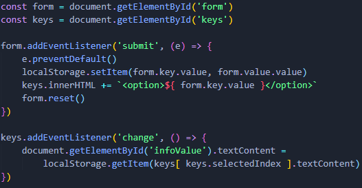

API-WebStorage
La API de almacenamiento web proporciona los mecanismos mediante los cuales el navegador puede almacenar información de tipo clave/valor, de una forma mucho más intuitiva que utilizando cookies.
Almacenamiento web, conceptos y uso:
Los dos mecanismos en el almacenamiento web son los siguientes:
- sessionStorage:
- Mantiene un área de almacenamiento separada para cada origen que está disponible mientras dure la sesión de la página (mientras el navegador esté abierto, incluyendo recargas de página y restablecimientos).
- localStorage:
- Hace lo mismo, pero persiste incluso cuando el navegador se cierre y se reabra.
Al invocar uno de éstos, se creará una instancia del objeto Storage, a través del cual los datos pueden ser creados, recuperados y eliminados. sessionStorage y localStorage utilizan un objeto de almacenamiento diferente según su origen — funcionan y son controlados por separado.
Métodos:
- Obtener valores de la memoria (getItem()):
- Los valores se pueden recuperar de la memoria usando Storage.getItem(). Este método usa la clave del dato como argumento y devuelve el valor.
- Guardar valores en la memoria (setItem()):
- Se usa tanto para crear nuevos datos como para actualizar valores existentes (si el dato ya existe). Este método recibe dos argumentos: la clave del dato que se va a crear/modificar y el valor que se va a guardar.
- removeItem():
- Recibe un solo argumento: la llave del dato a eliminar, y lo remueve del objeto de almacenamiento de ese dominio.
- Storage.clear():
- No recibe argumentos; vacía todo el objeto de almacenamiento de ese dominio.
Ejemplo:
